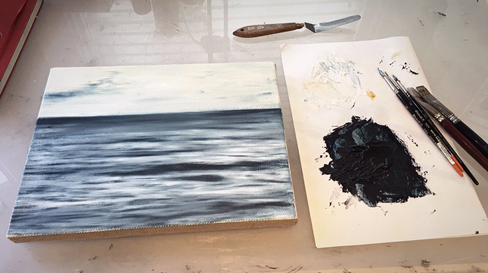
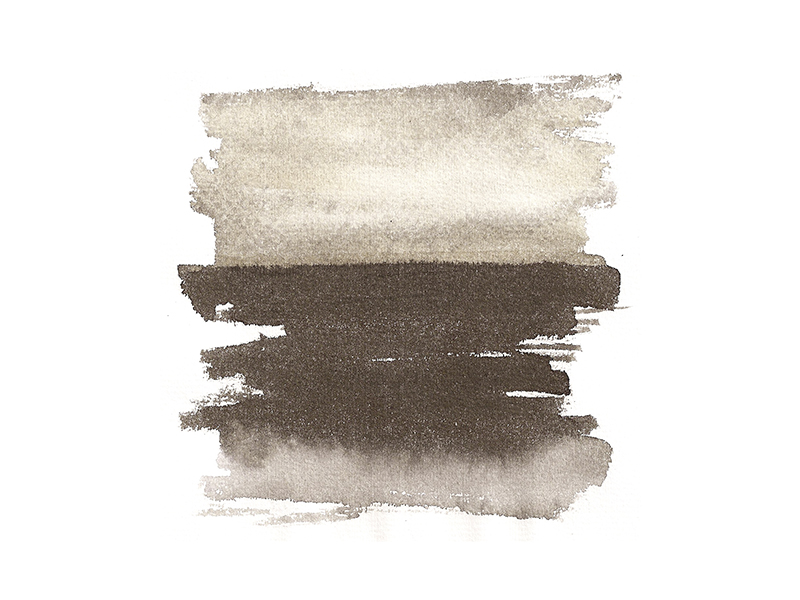

NOUVELLE VAGUE
James Buckhouse
Created for the 2016 Sensorium at SFBALLET, Nouvelle Vauge is a video sculpture that visitors can move through and around. As installed at the War Memorial Opera House in San Francisco, visitors passed through the curtain of waves to enter the theatre, signalling a transformation from normal life to an artistic experience.
Shown here are ink, oil and digital studies, a video excerpt, and serveral views of the piece as oringially installed.
Visitors ran their fingers through the illuminated fringe, dashed through the curtains, and luxuriated in the feeling of the projection surface flowing around their bodies.
Shown here are ink, oil and digital studies, a video excerpt, and serveral views of the piece as oringially installed.
Visitors ran their fingers through the illuminated fringe, dashed through the curtains, and luxuriated in the feeling of the projection surface flowing around their bodies.

Excerpt from the video footage for Nouvelle Vague

Installation sketch for Nouvelle Vague

Visitor enjoying the Nouvelle Vague video curtain

Oil on linen study for Nouvelle Vague 2015

Ink on paper study for Nouvelle Vague 2015

Visitors enjoying Nouvelle Vague

Installed view of Nouvelle Vague for 2016 Sensorium at SFBAllET
| - |
|
- |
2016